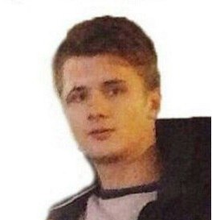

Стремительный выход сайта www.oboivsaratove.ru в ТОР 5 поисковой выдачи
Принципы и преимущества схемы работы по часам в отделе SEO.КАРТОЧКА ПРОЕКТА
Компания:
Интернет-магазин обоев «О-ДЕКОР» - один из лидеров своего рынка. Стильные шведские обои – это цвет, объем, концепция дизайна.
Цели:
1. Создание сайта для расширения клиентской аудитории
2. Положительная динамика позиций сайта в поисковой выдаче
3. Привлечение поискового трафика и его апробирование как канала привлечения новых клиентов
География:
Саратов
Старт проекта:
2016
Проделанная работа:
В 2015 году компания «О-ДЕКОР» обратилась к нам с задачей о разработке интернет ресурса, который в последствии станет инструментом увеличения клиентской аудитории и продаж в Саратовском регионе.
Мы провели анализ конкурентного окружения и на основании полученной информации разработали и предложили заказчику оптимальный дизайн, и структуру сайта. Параллельно мы занимались разработкой стратегией последующего продвижения сайта.
Стратегия включила в себя мероприятия по внутренней оптимизации сайта, включая контент план и внешней оптимизации с планом регистрации в тематических каталогах и наращивания ссылочного веса.
После сдачи сайта заказчику мы выполнили поисковый аудит сайта. На основании проведенного аудита:
1. Составили релевантное ядро поисковых запросов,
2. Разработали карту релевантности на основе кластеризации запросов по поисковой выдаче Яндекса
3. Произвели оптимизацию мета-тегов целевых страниц по карте релевантности
По завершении первого этапа внутренней оптимизации мы преступили к реализации контент плана и разместили на страницах оптимизированный текстовый контент и приступили к планомерному наращиванию ссылочного веса.

Для привлечения дополнительного информационного трафика мы создали блог, однако нам не удалось добиться достаточного роста посещаемости эта тема в настоящее время отложена.
Постоянно находясь во взаимодействии с заказчиком, учитывая замечания и вникая в тонкости его бизнеса нам удалось достичь положительных реультатов:
Увеличение на 100% количества уникальных посетителей сайта (тренд на графике ниже)
Выход из ТОР 20 в ТОР 5 (тренд на графике ниже)
Видимость сайта
Посещаемость сайта
Хэппи энд))):
За время совместной работы Клевер заслужил доверие и О-ДЕКОР расширил географию продвижения в сторону городов: Пенза, Оренбург, Астрахань, Тамбов, Воронеж, Липецк
Наши планы:
1. В настоящее время мы разрабатываем новый формат стратегии продвижения с учетом опыта, наработанного за время сотрудничества,
2. Готовится новый контент план, реализация которого повысит интерес посетителей сайта, а как следствие мы получим рост поведенческих показателей и авторитетности сайта в «глазах» поисковых систем.
Николай Апурин, генеральный директор ООО "АРТВЕЛЛ"
Требования к программистам в ARTWELL самые высокие. Знание всех современных технологий, это минимум. Критично важен опыт по применению этих технологий на практике.
В целом, у нас очень серьезный подход и к формированию штата в целом, и к привлечению программистов в частности. В Казахстане у нас организована школа программирования, где студентов ВУЗов мы берем на оклад и тренируем на внутренних задачах (но не на клиентских проектах). В России студент после ВУЗа сразу хочет 100 000 рублей в месяц. Поэтому мы работаем по-другому — любой опытный программист РНР сразу может устроиться к нам на оклад от 140 000 рублей в месяц. Опытный JAVA-разработчик от 150 000 рублей до 400 000 рублей в месяц.
Мы оплачиваем обучение и повышение квалификации (при успешной сдаче экзамена). Но в основном мы хантим на hh.ru лучшие кадры, ведь задачи, которые мы решаем — это общероссийские системы, которые пользуются граждане РФ. Мы платим стабильно очень хорошие оклады — это огромное конкурентное преимущество
Николай Апурин, генеральный директор ООО "АРТВЕЛЛ"
У нас компания широкого профиля с сильной технической базой. Основные направления компании — это разработка сайтов (собственная CMS, 1С-Битрикс, ModX), разработка CRM (собственные решения). Вследствие этого наши программисты должны отвечать высоким требованиям. Чтобы работать в компании необходимо отлично знать РНР и JS, хорошо разбираться в Битрикс и быстро адаптироваться к любому фреймворку, например, к Laravel
Любой новый программист проходит курс месячных домашних заданий, часть из них может оплачиваться. Далее мы приглашаем его в команду на испытательный срок, который длится 3 месяца. За это время специалист вливается в команду и понимает нужно это ему или нет. Раз в 6 месяцев сотрудник проходит курсы повышения квалификации и делится новыми знаниями со своими коллегами, это положительно влияет на атмосферу тех. отдела.
Автор: Степан Овчинников, ИНТЕРВОЛГА (Генеральный директор)
Оригинал: http://www.intervolga.ru/blog/life/kak-my-nakhodim-uchim-i-razvivaem-programmistov/